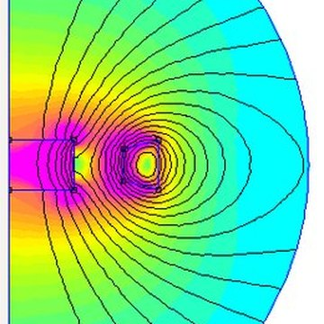
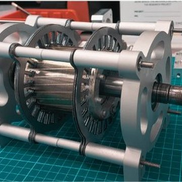
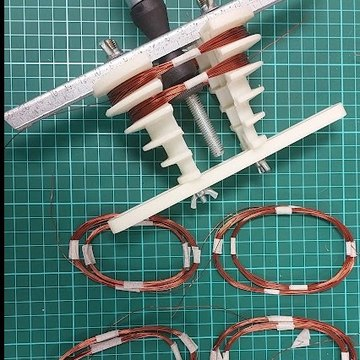
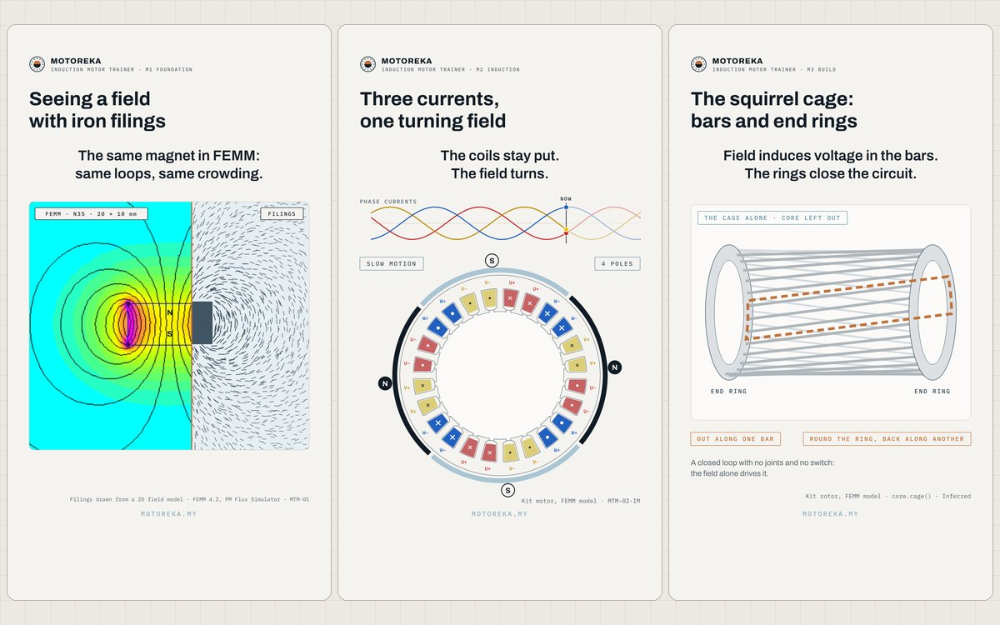
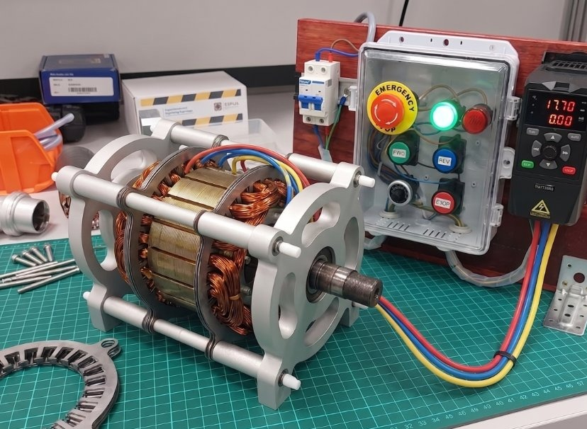
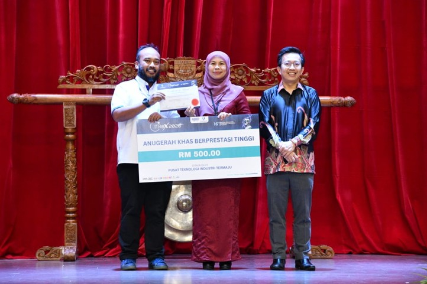
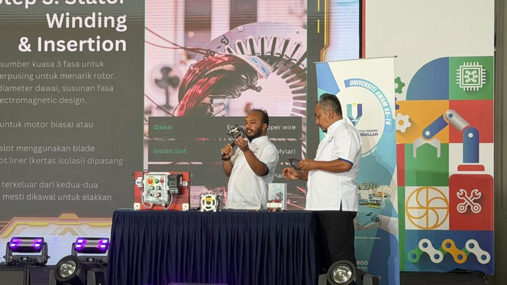
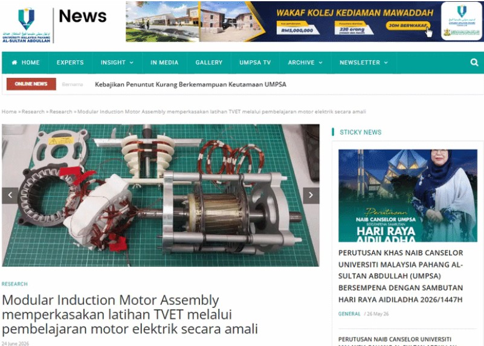

Your students build the motor they study.
They stack the core, wind the stator, assemble the machine and run it, then measure what they built. Five modules of notes and worksheets, an app for every module, and training for your instructors.
What a class does with one kit
The same five modules serve TVET and universities, with documentation for JPK programmes or for CO-PO mapping. Trainees predict how the kit motor will perform, build and wind it, then run it and measure it against their prediction.
- 01

MTM-01FoundationFields, iron, magnets, induction and force, in FEMM and on the bench - 02
 MTM-02-IMInductionOpen the kit motor and predict its torque, current and efficiency
MTM-02-IMInductionOpen the kit motor and predict its torque, current and efficiency - 03

MTM-03-IMBuildStack the core, fit the cage rotor, assemble a motor that turns freely - 04

MTM-04WindDesign, wind, insert and test the three-phase stator winding - 05
 MTM-05-IMDrivePower it up from DOL, star-delta and a VFD, and measure it
MTM-05-IMDrivePower it up from DOL, star-delta and a VFD, and measure it
Watch
Free and public. Good for a lecturer deciding, and for students before a session.

Shorts · 24 out, 42 plannedMotors in one minuteOne idea per Short, from the kit motor: fields, slip, iron loss, skew. Play them here, one after another.Watch here
Video · 1:40The trainer in two minutesFrom a stack of laminations to a running motor, on the trainer itself.Free Video series · in productionWinding WorkshopHow a stator winding is planned, wound and connected. The episodes that need no kit will be free.Coming
Video series · in productionWinding WorkshopHow a stator winding is planned, wound and connected. The episodes that need no kit will be free.ComingAll 42 Shorts, by module 24 out now
- The field around a wire, drawn
- Seeing a field with iron filings
- Two magnets, two field patterns
- Why magnets come in pole pairs
- Same coil, add iron: what happens to the field
- Why current in a field gets pushed
- Where torque comes from: the energy view Soon
- Faraday's law, one turn of a coil
- Voltage needs changing flux
- What heat and a reverse field do to a magnet Soon
- What's inside an induction motor
- Three currents, one turning field
- Swap two wires and the motor reverses
- Why the rotor never catches the field
- Rotor currents grow as the rotor slows Soon
- The torque–speed curve in 45 seconds Soon
- Why starting current is so high Soon
- Read a nameplate: what 1380 rpm tells you Soon
- Supply to shaft: where the power goes Soon
- What the no-load test tells you Soon
- What the locked-rotor test tells you Soon
- The equivalent circuit in 45 seconds Soon
- A factory motor vs the training kit
- Why motor cores are made of thin sheets
- What cutting does to electrical steel
- The two kinds of iron loss
- Stacking a core: how tight is tight enough
- The squirrel cage: bars and end rings
- Where the rotor current flows in the end rings
- Why rotor bars are skewed
- Why motor air gaps are kept so small
- Checking an air gap with a feeler gauge
- Bearing fits: on the shaft and in the housing
- What unbalance does to a spinning rotor
- How 24 slots make a 4-pole winding Soon
- Phase belts: why U, V and W take turns Soon
- Lap or concentric: same slots, two coil shapes Soon
- Reading an IEC winding diagram Soon
- Slot liners: the paper that prevents a short Soon
- Winding a coil on a former Soon
- Star or delta: one motor, two voltages Soon
- Testing a new winding before any power Soon
Practise
The tools and demos open without an account. A free account, opening soon, will keep your self-check scores.
 Induction Motor Trainer · FreeSlip LabLoad the kit motor and see slip, rotor current and torque change together.
Induction Motor Trainer · FreeSlip LabLoad the kit motor and see slip, rotor current and torque change together. Induction Motor Trainer · FreeRotating field and slipTwo interactive scenes: three currents make one turning field, and the rotor always slips.
Induction Motor Trainer · FreeRotating field and slipTwo interactive scenes: three currents make one turning field, and the rotor always slips. Induction Motor Trainer · FreeMotor ExplorerTake a factory motor and the kit motor apart in 3D, part by part.
Induction Motor Trainer · FreeMotor ExplorerTake a factory motor and the kit motor apart in 3D, part by part. Induction Motor Trainer · FreeForceSeven FEMM demos of electromagnetism, for Windows. The installer sets up FEMM.
Induction Motor Trainer · FreeForceSeven FEMM demos of electromagnetism, for Windows. The installer sets up FEMM. Induction Motor Trainer · FreeRound-Wire Motor ViewerThe kit stator and its round-wire winding in 3D, phase by phase.Free account · opening soonSelf-checks and a certificateOne self-check per module. Pass all five for “Induction motor basics”, from Motoreka and UMPSA.Opening soon
Induction Motor Trainer · FreeRound-Wire Motor ViewerThe kit stator and its round-wire winding in 3D, phase by phase.Free account · opening soonSelf-checks and a certificateOne self-check per module. Pass all five for “Induction motor basics”, from Motoreka and UMPSA.Opening soonLearn in depth
The kit with the five modules, and training for your trainers. Prices are quoted for each institution.
The kit and training bundle
One kit per group, the course hub with the modules, their sessions and the apps, and train-the-trainer for your staff.
- Modules MTM-01 to MTM-05-IM, with workbooks, logbooks and slides (four ready, Drive follows)
- CoreSim, the Winding Assistant and the Winding Workshop app
- Winding Workshop lab videos for the kit
- Train-the-trainer for your instructors, before they teach
- Spares and servicing from UMPSA
MAK-IM Motor Assembly Kit
The stator lamination kit, a die-cast cage rotor on its shaft, end shields and bolt-and-nut hardware, with the Lab apps, module workbooks and slides.
Public workshop
The full programme on Motoreka trainers at UMPSA. No hardware purchase needed.
On-site workshop
The programme delivered at your institution, on our trainers.
Train-the-trainer
Your instructors are taken through the full curriculum at UMPSA or on site before they teach it.
Modules and apps
Single modules from MTM-01 to MTM-05-IM, and the Force, Slip Lab, Motor Explorer, CoreSim and Winding Assistant apps, to fit an existing curriculum.
Spares and servicing
Replacement laminations, windings and hardware, and servicing from UMPSA.
- A train-the-trainer session for your instructors, at no cost
- The trainer’s apps to try with your team before you decide
Work with us
For institutions and programmes.
What trainees and instructors say
Building real motors gave me hands-on experience that would have taken years to develop in industry. I am now confident to work with motors.
The programme bridges the missing practical gap in electrical machine education. My students are now confident technologists.
Recognised beyond the lab
Coverage refers to the trainer by its development name, TET-IM.

CITREX · 2026Gold Award and Special Award for High PerformanceThe Special Award was conferred by the Centre for Advanced Industrial Technology.
Ministry of Higher Education · 2026Featured in a national video on TVET innovationWatch the feature Press
UMPSA News · 24 June 2026Full profile of the modular induction motor trainerRead the article (Bahasa Melayu)Talk to the team at EMDLab
Tell us what you teach, build or need designed. We reply within one working day.